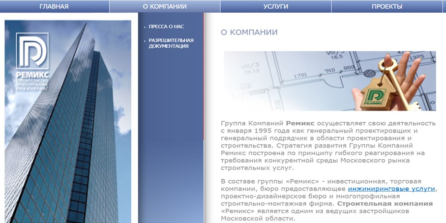

<div class="insidePage">
	<div class="insideContent">
		<div class="textContent">
			<div class="sometextTitle">Другие компании группы</div>
				<div class="herobigsubtitle">Ремикс</div>
					<div class="herotext">О компании<br>
						Группа Компаний Ремикс осуществляет свою деятельность с января 1995 года как генеральный проектировщик и генеральный подрядчик в области проектирования и строительства. Стратегия развития Группы Компаний Ремикс построена по принципу гибкого реагирования на требования конкурентной среды Московского рынка строительных услуг.

В составе группы «Ремикс» - инвестиционная, торговая компании, бюро предоставляющее инжиниринговые услуги, проектно-дизайнерское бюро и многопрофильная строительно-монтажная фирма. Строительная компания «Ремикс» является одним из ведущих застройщиков Московской области.

15 лет существования Группы Компаний Ремикс на строительном рынке - это сотни тысяч квадратных метров зданий и реализованные проекты жилых микрорайонов. Группа Компаний Ремикс (Москва) располагает всеми необходимыми лицензиями, позволяющими ей выполнять функции генерального подрядчика, застройщика (Москвы и Московской области) и генерального проектировщика в области строительства.

За успешное строительство ряда объектов на территории Московской области Группа Компаний Ремикс была награждена почетной грамотой Губернатором Московской области.</div>
			
			<br>
					<a href="http://www.remiks.ru/cntnt/top2.html" class="btn btn-primary">
						<div class=" "></div>
						<div class="">Дополнительная информация</div>
					</a>
			
		</div>	
	</div>
</div>
